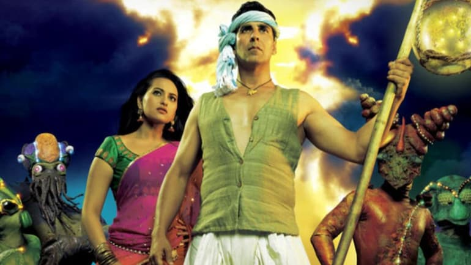

On August 31, Joker completed eight years of release. This week on Wahiyat Wednesday, we talk about Shirish Kunder's biggest embarrassment till now, Joker.
Long before Joaquin Phoenix won an Oscars for his role of the Joker in the Todd Phillips film, Bollywood had its tryst with their very own, Indianised version of Joker. If you think that we made a film on par with the artistic genius like that of the 2019 film, then let's be clear it stands nowhere in comparison to that. We are talking about Akshay Kumar's Joker, which was released in 2012. In their defence, Bollywood's Joker never actually claimed to have anything to do with DC's coolest villain of all time. Directed by Shirish Kunder, this homegrown Joker boasted of stupidity, poor performances and sheer ignorance of the intellect of the audience.
In a major relief for family members of Covid-19 victims, the Calcutta High Court has allowed kin of the victims to perform the last rites after taking precautions against the infection. In a major relief for family members of Covid-19 victims, the Calcutta High Court has allowed kin of the victims to perform the last rites after taking precautions against the infection. A division bench of Chief Justice TB Radhakrishnan and Justice Arijit Banerjee, said on Wednesday that families of Covid-19 victims should have “an opportunity to have a final look at the deceased’s human remains and perform last rites”.
Union HRD Minister Ramesh Pokhriyal has informed that NCERT is conducting a survey to understand study pattern during Covid-19 pandemic.
The Union Minister of Education Dr Ramesh Pokhriyal on Thursday said that the National Council of Educational Research and Training (NCERT) has recently conducted a survey to understand the scenario of Online Learning of school students amid COVID-19 pandemic and added “NCERT has prepared ‘Alternative Academic Calendar’ and ‘Students’ Learning Enhancement Guidelines’ with a focus on learning outcome” in order to fill the gaps or loss of learning among students. He presented this answer in reply to question asked by Jyotiraditya Scindia in the Rajya Sabha..
China has been holding air raid drills in major cities in September to mark the annual National Defense Education Day. However, the timing of this drill has raised many eyebrows as the last time such exercise was carried out in Lhasa was in 2009.
Amid growing tensions between India and China along the Line of Actual Control, Chinese state-run media has reported that the government of Lhasa city, the administrative capital of the Tibetan Autonomous Region, will conduct an air raid drill on September 19. China has been holding air raid drills in major cities in September to mark the annual National Defense Education Day. However, the timing of this drill has raised many eyebrows as the last time such exercise was carried out in Lhasa was in 2009. In the current situation of ongoing border friction between China and India, this looks like Beijing’s psychological warfare tactic to create a climate of fear among local Tibetans. The formal statement about the air defence alarm drill was carried by all local media and many Weibo handles. The Chinese government in Lhasa city said that the siren will be played on September 19 in three different types. The first will be played for three minutes from 12 to 12.03pm sounding for 36 seconds with a gap of 24 seconds. The second one will be run for three minutes from 12.06 to 12.09pm sounding for six seconds with a gap of six seconds. The third alarm will be broadcast for three minutes from 12:12 to 12:15pm for the complete duration without any gap. In a special announcement dated September 14, the Lhasa city government said the test will “improve the general public’s conception of national defense and civil air defense awareness” However, no specific explanation for the three types of alarms was provided in the media or in the announcement.